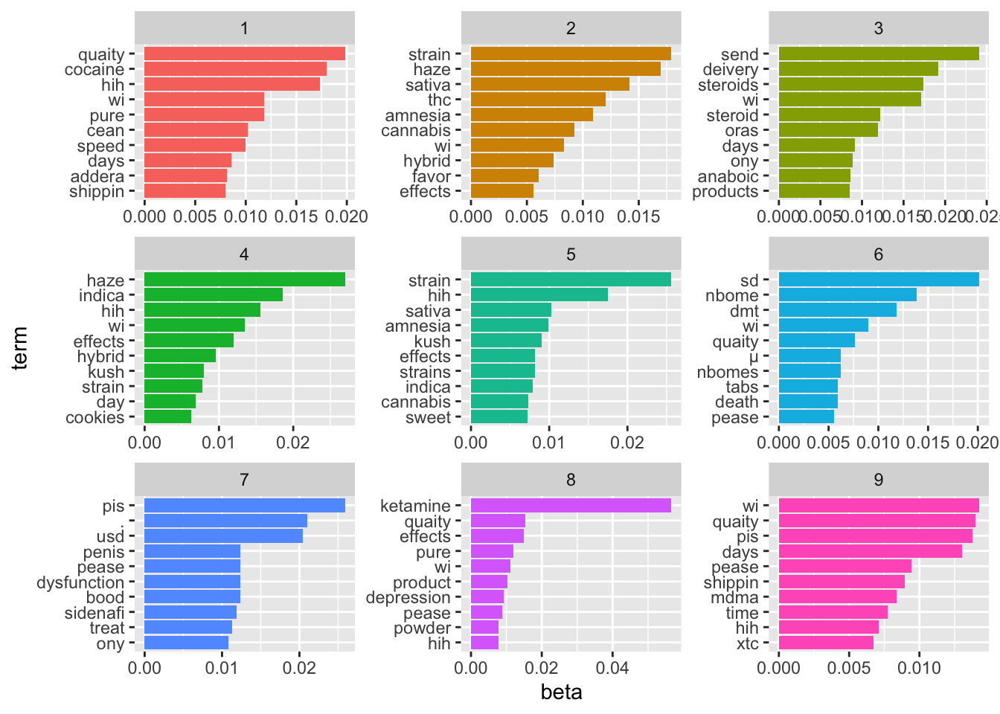
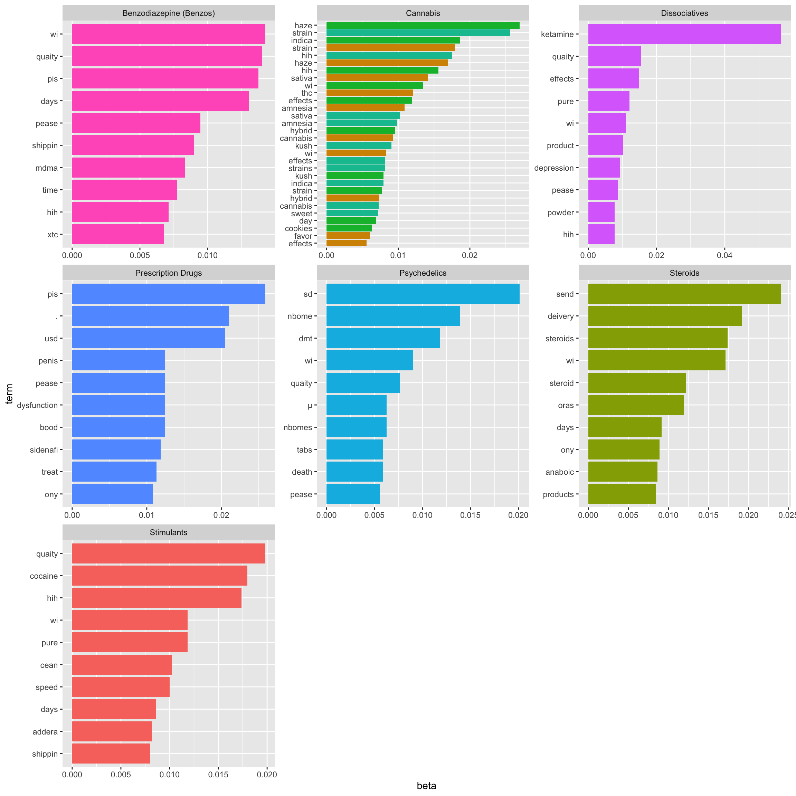

Code
library(tidyverse)
library(forcats)
library(stringr)
library(tidytext)
library(igraph)
library(ggraph)
library(ggrepel)
library(topicmodels)
data <- read_csv("/Users/shihaitao/Documents/DarknetProject/Nemesis/complete.csv")library(tidyverse)
library(forcats)
library(stringr)
library(tidytext)
library(igraph)
library(ggraph)
library(ggrepel)
library(topicmodels)
data <- read_csv("/Users/shihaitao/Documents/DarknetProject/Nemesis/complete.csv")word_only <- data %>%
1 select("Drug_Type_L", "MainContent") %>%
2 group_by(Drug_Type_L) %>%
summarise(Type_Content=paste(MainContent,collapse = "")) %>%
3 slice(c(-6, -11)) %>%
4 unnest_tokens(word, Type_Content) %>%
mutate(word = str_remove_all(word, "\\d+")) %>%
mutate(word = str_remove_all(word, "mg|g|ml|l")) %>%
filter(word != "") %>%
anti_join(stop_words, by = "word") %>%
5 count(Drug_Type_L, word, sort = TRUE) %>%
ungroup()Drug_dtm <- word_only %>%
cast_dtm(Drug_Type_L, word, n)
Drug_dtm<<DocumentTermMatrix (documents: 9, terms: 6048)>>
Non-/sparse entries: 10783/43649
Sparsity : 80%
Maximal term length: 55
Weighting : term frequency (tf)As we have already know that we have 9 types of drugs here. So, I set k equals to 9. If we don’t know, then we may set k to different values to test.
Drug_lda <- LDA(Drug_dtm, k = 9, control = list(seed = 100))
Drug_ldaA LDA_VEM topic model with 9 topics.Examining per-topic-per-word probabilities and find the top 10 terms within each topic.
Predict_topics <- tidy(Drug_lda, matrix = "beta")
Predict_topics# A tibble: 54,432 × 3
topic term beta
<int> <chr> <dbl>
1 1 strain 2.19e- 96
2 2 strain 1.79e- 2
3 3 strain 3.61e-101
4 4 strain 7.75e- 3
5 5 strain 2.56e- 2
6 6 strain 1.04e- 3
7 7 strain 2.97e- 95
8 8 strain 6.28e- 95
9 9 strain 1.50e- 90
10 1 ketamine 8.17e- 4
# ℹ 54,422 more rowstop_terms <- Predict_topics %>%
group_by(topic) %>%
slice_max(beta, n = 10) %>%
ungroup() %>%
arrange(topic, -beta)
top_terms# A tibble: 90 × 3
topic term beta
<int> <chr> <dbl>
1 1 quaity 0.0198
2 1 cocaine 0.0180
3 1 hih 0.0174
4 1 wi 0.0118
5 1 pure 0.0118
6 1 cean 0.0102
7 1 speed 0.0100
8 1 days 0.00858
9 1 addera 0.00817
10 1 shippin 0.00796
# ℹ 80 more rowstop_terms %>%
mutate(term = reorder_within(term, beta, topic)) %>%
ggplot(aes(beta, term, fill = factor(topic))) +
geom_col(show.legend = FALSE) +
facet_wrap(~ topic, scales = "free") +
scale_y_reordered()
Examining the per-document-per-topic probabilities to predict which topics are associated with each document.
Drug_gamma <- tidy(Drug_lda, matrix = "gamma")
Drug_gamma# A tibble: 81 × 3
document topic gamma
<chr> <int> <dbl>
1 Cannabis 1 0.00000125
2 Dissociatives 1 0.00000509
3 Steroids 1 0.00000271
4 Stimulants 1 1.00
5 Ecstasy 1 0.00000954
6 Benzodiazepine (Benzos) 1 0.00000535
7 Psychedelics 1 0.00000687
8 Prescription Drugs 1 0.0000107
9 Opioids 1 0.00000837
10 Cannabis 2 0.415
# ℹ 71 more rowsDrug_gamma <- Drug_gamma %>% group_by(topic) %>% slice_max(gamma)Due to the limited sample size, three topics have been categorized as “Cannabis”. It is possible that Ecstasy and Opioids may not exhibit statistically significant differences. Nevertheless, we can include the predicted drug types in the plot.
# define the plot_labels vector
plot_labels <- Drug_gamma$document
# modify the top_terms data frame to include plot labels
top_terms <- top_terms %>%
mutate(plot_label = plot_labels[topic])
# plot the data with the new plot labels
top_terms %>%
mutate(term = reorder_within(term, beta, topic)) %>%
ggplot(aes(beta, term, fill = factor(topic))) +
geom_col(show.legend = FALSE) +
facet_wrap(~ plot_label, scales = "free") +
scale_y_reordered()
We can compare this code’s output to the plot that describes the word frequency of each drug type created earlier in reality (please refer to TF.IDF.html). Three instances of “Cannabis” are displayed in different colors. Nonetheless, considering the small sample size, the model exhibits a reasonable level of performance.